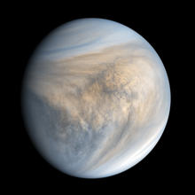

Venus
<
Venus, el segundo planeta desde el Sol, es conocido como el "gemelo" de la Tierra debido a su tamaño y composición similares. Sin embargo, su ambiente extremo lo convierte en un mundo muy diferente y hostil. Venus tiene una densa atmósfera compuesta principalmente de dióxido de carbono, que genera un potente efecto invernadero, haciendo que su superficie alcance temperaturas de más de 450 °C
